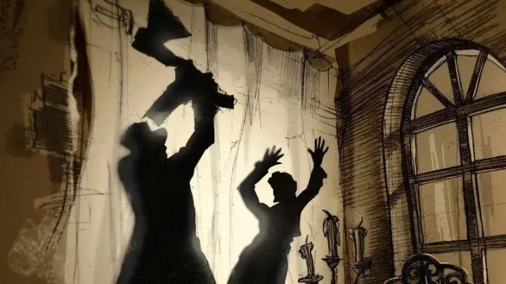

罪与罚
内容简介：
- 音乐剧《罪与罚》将复调小说中遥相呼应的“欲望”主题突出，并且使之在20世纪的历史语境中得到清晰呈现：《罪与罚》中主人公斯维德里加伊洛夫与拉斯科尔尼科夫既对立又联合，在成为诱惑者这点上是一丘之貉。如果说斯维德里加伊洛夫代表的是情欲的诱惑，拉斯科尔尼科夫展现的就是超人思想对人的诱惑。原作中的主人公在音乐剧中均以当代人的形象出现。拉斯科尔尼科夫俨然现代版的大学生，在升降舞台构成的逼仄空间，他一面敲击笔记本电脑，一面以摇滚乐声嘶力竭地唱出激愤的思想和情绪。他的噩梦又从当代的蜗居阁楼延伸到19世纪的俄罗斯，于是，出现了麻木的人群抽打羸弱驽马的狂欢场景。经过时空转换，又拼接出暴力衍生暴力的场景。
- 剧中没有对杀死老太婆的场景进行现实主义的复现，而是以声光画面的形式象征出来：拉斯科尔尼科夫举起的斧头在幽暗的舞台背景中被红光照亮，在空中飞舞，于是成片的教堂建筑被摧毁。舞台上被这场面吓得目瞪口呆的拉斯科尔尼科夫拼命阻止举着斧头大肆破坏的人们，却被众人一步步逼到墙角：罪恶的发起者对其理论后果的严重性始料未及，被群体和时代放大的罪恶，以触目惊心的方式催逼他醒悟悔改......